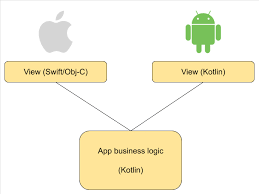

Ahmad Mahmoud
June 14, 2022
Kotlin Multiplatform
I never thought I would write an article to praise mobile a cross-platform mobile framework, well, Kotlin Multiplatform allowed this to happen!
Throughout my career in mobile development, I faced multiple situations where I had to maintain applications built with cross-platform frameworks such as:
- Oracles Mobile Application Framework (AKA: MAF) a framework based on PhoneGap by Oracle.
- React Native by Facebook.
I also briefly checked technologies such as Titanium by Appcelerator and Flutter by Google.
The mentioned Apps that I worked on ranged from small-scale to large-scale apps with a large user base and complex features.
One more important point to add, I worked on such apps during different times in my career (Junior, Intermediate, and Senior), yet my opinion with regards to using mobile cross-platform frameworks to build mobile apps no matter simple or complex, didn’t change and it was always…
Then I had the opportunity to work on a very cool and promising project, and we wanted to minimize the build time without sacrificing the quality.
Since the syntax of Kotlin (Android language) and Swift (iOS language) are very close, and fortunately I love both, so I thought about writing a script or a desktop App to generate the same interfaces and classes for the two platforms, but actually, this will be a very time-consuming non-scalable approach, then while I was searching, Kotlin Multiplatform Mobile (KMM) came to my way, and after reading about it, I liked how different Kotlin Engineers thought when implementing a cross-platform mobile framework, and how they are not trying to reinvent the wheel, but trying to make the wheel more efficient from there point of view (More on that later), so I decided to give it a go with caution and thankfully this came without regrets, at least until now. From now on I will use KMM as an abbreviation for Kotlin Multiplatform Mobile because it is much easier to write 😂😂.
So, What Is Kotlin Multiplatform Mobile?
Kotlin Multiplatform is a cross-platform framework for sharing business logic only (NO UI) across platforms (Mobile, Desktop, and even web).
Sharing business logic across platforms brings along many benefits such as:
- Reduced development time.
- Easier code maintenance.
- Flexibility.
- Native performance.
- Flawless access to the platform code.
- Ideally, Unit Tests are written once.
What makes Kotlin Multiplatform different from other cross-platforms ?
Most of the cross-platform mobile frameworks are intended for web developers as they are more familiar with web technologies such as HTML, CSS, and JS.
They claims that you write code once and run on both Android and iOS, but believe me, these are only claims.
Apps developed by most of the cross-platform mobile frameworks fall under one of two categories:
- They are web apps wrapped in a webview mobile app, which means that the UI elements are actually web elements and not native mobile elements.
- The framework provides its own implementation of the UI elements, then these elements are translated to the native UI elements, an example of this is React Native.
So what is wrong with that ?
Imagine if Google or Apple introduced new UI elements today, as a mobile developer I can update the platform SDK, then use the new elements right away, on the other hand, if you are using a cross-platform framework, you will have to wait until the framework introduces an update to support the new elements, which is not good.
Also, Apps developed with cross-platform mobile frameworks are usually noticeably large in size, so with a Hello World app, you can have a native App with less than 500 KB, but with cross-platform, you can start with a 25 MB App 😮.
Even though it is partially true that you will write your code once, but you will face the bugs of both platforms, and believe me, if you are not familiar with each platform, solving some platform-related problems might be a nightmare. For example Android manifest, Gradle configurations and runtime permissions in Android and build settings, Info.plist fields, and user permissions in iOS, these are just examples but there are more.
Third-party libraries are also a real challenge because even though there are many libraries out there but you can not guarantee that the maintainer will continue to maintain or solve bugs, and if that happens, the alternatives are not that much, for example, when I was working on a React-native based app, I faced a bug in the push notifications library, and this library was recommended by the React-native documentation and back then there were no native library (I’m not following if there is a native one now or not), and the maintainer took too long, about a month, to respond to the bug, although the library was like more than 1K star on GitHub, and that was a very bad indicator to me.
The previous points will affect your production Apps timelines for sure.
Kotlin Multiplatform is not trying to do that, instead, it tries to play nice with both Android and iOS by allowing you to share only the business logic, but you still write the UI using native languages such as Swift in iOS.
What does that means ?
It means that you will only write the shared code/layers/modules with Kotlin such as HTTP client, Local storage. database, model classes, common use cases, and any other common logic that you can think about, and the UI part to be written with the native language, and you will be able to call the Kotlin classes from the native code the same way you do with the native classes.
If you structured your code properly, you can share up to 85% of the code between platforms. You can share everything from the data access layer by Interactors/UseCases to the data/presentation layer such as ViewModels.
The best part is that you can provide your own implementation for the shared logic with the technologies you are already comfortable with such as Room and Retrofit in Android or Core data and Alamofire in iOS, or you can use any open-source library if you prefer and somehow KMM is enforcing to use the OOP concepts and the SOLID principles in a proper way, so when you write code using KMM framework, you will find some challenges that might look really frustrating but actually most if not all of the problems can be solved by applying the OOP concepts and the SOLID principles properly.

Which IDE I can use ?
- Shared logic: IntelliJ IDEA or Android Studio.
- UI part: The IDE you prefer for example Xcode for iOS and MAC OS, Android Studio for Android, and any text editor to write JS.
How to Distribute Libraries Written in Kotlin Multiplatform?
- Android: We can distribute the library as a normal binary with
.aarextension and import it to your project, or using famous dependencies managers such as JitPack.io and MavenCentral, then consume it in Gradle. - iOS: We can provide the library as an XCFramework, Swift Package, or Cocoapod.
What about the App size ?
Unlike other cross-platform frameworks, the resulted app size is not very big compared to apps built using React Native or Phone Gap for example.
Is Kotlin Multiplatform Mobile Ready for Production ?, and if yes, Are there any big names out there using it in production Apps ?
The short answer is: yes.
Even though Kotlin Multiplatform Mobile is in the beta stage, most of the components are stable, however, there are some caveats, most of them are either already addressed or there are rugged and reliable solutions by the community, however, you might face some challenges with tooling.
There are big names using KMM in their production Apps, some of them you might be using already such as:
- NetFlix: Netflix’s app for video production, relies on Kotlin Multiplatform Mobile to build business logic that runs across platforms. Netflix chose KMM to improve product delivery times using multiplatform architecture
You can read more about it from here.
- Memrise: Memrise is a language learning mobile app with over 40 million registered users. Memrise uses Kotlin Multiplatform Mobile to have one business logic shared across platforms. Before implementing Kotlin Multiplatform, the company had to debug the code between platforms, which burned time and productivity.
You can read more about it from here.
- Todoist App.
You can read more about it from here.